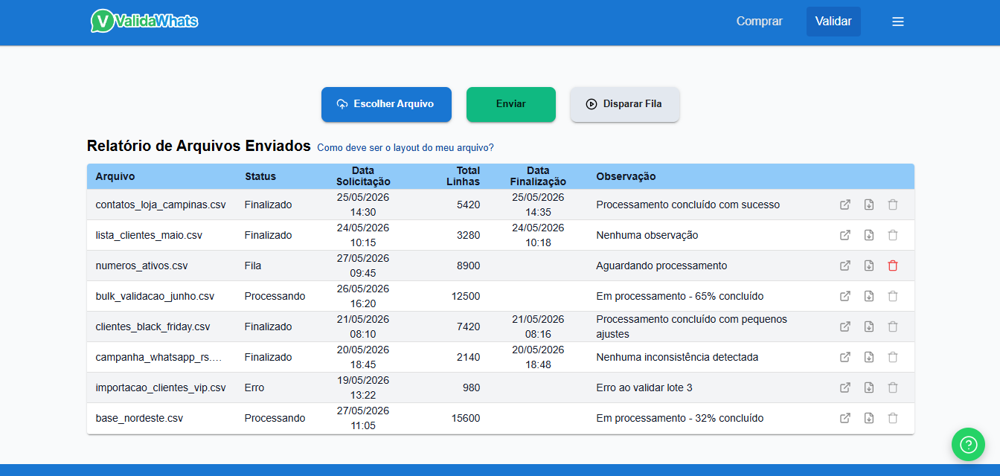
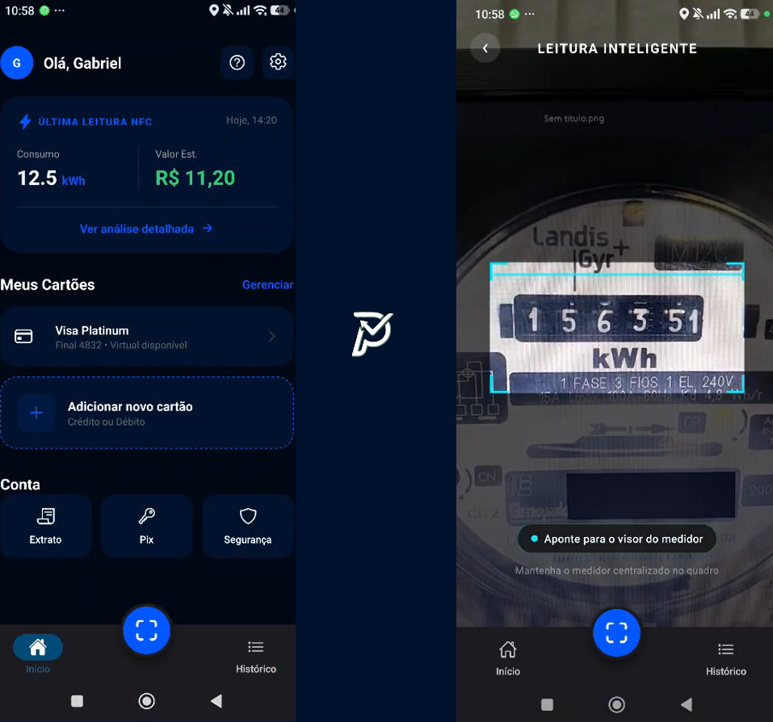
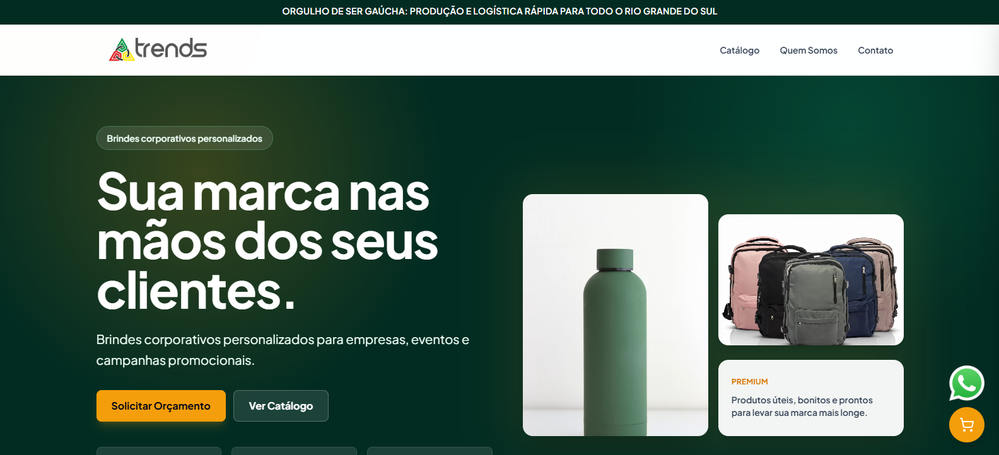
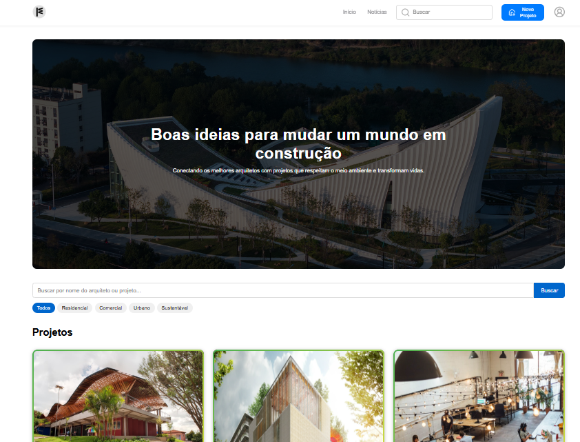
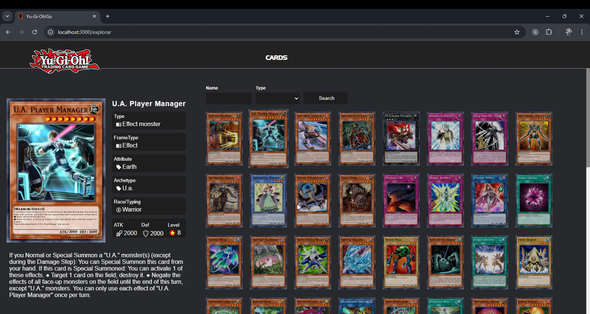

Gabriel
Matte Elias
Fullstack Developer with 4 years of experience building modern, responsive interfaces. I work in the financial sector with a focus on React, Node.js, performance, and UX.
ValidaWhats

A bulk WhatsApp number validation platform built with React and Node.js. The system manages file uploads containing phone numbers, provides status tracking (queued/validated), line-by-line details for each file, and a dashboard with charts for completed validations, valid numbers, and invalid numbers. It also includes user authentication and an FAQ section to support users.
Pontix

An innovative platform for reading electricity meters through artificial intelligence. The project integrates OCR and computer vision to automatically capture consumption data, offering QR Code PIX generation and payment slips for easier payments. It also includes a detailed payment and consumption history page, giving users transparency and full control over their energy expenses.
Trends Brindes

A high-performance commercial landing page developed for a promotional products company. The project focuses on SEO, fast loading times, responsive design, and lead generation. It features a product catalog, category navigation, a quote cart system, and WhatsApp integration, allowing customers to build a list of products and request quotes directly from the company without a traditional checkout flow.
Messaging App

A messaging application built with React, focused on real-time communication and high performance. The application uses WebSocket for instant message sending and receiving, ensuring a smooth experience. For optimization, useMemo and useCallback were applied to reduce unnecessary re-renders in high-volume data scenarios. Techniques such as list virtualization and lazy loading were also implemented, allowing the app to handle hundreds of conversations and thousands of messages without performance degradation.
Framework

A social network specialized in architecture and architects, with an intuitive and modern platform for sharing projects. The project includes a home page with featured content, secure authentication with JWT, an exclusive architect page with an interactive gallery, a dynamic map for locating projects, a detailed section with architect data and photos, and a news page with industry updates. Built with Next.js for optimized performance and CSS Modules for modular styling.
Financial Manager

A financial management application built in React and integrated with a Java backend and PostgreSQL database, with features for controlling income, expenses, financial goals, and interactive reports. Organize your finances intuitively and track your progress with dynamic charts and a modern interface.
Yu-Gi-Oh!

A project about the famous card game "Yu-Gi-Oh!", with a home page and a dedicated page for presenting cards. In addition to displaying each card's description, attributes, and other information, it also includes a search system by name and card type, integrated with an external API specialized in the theme to make the experience even more practical for fans. The project was built with React and the Material-UI (MUI) library to create a modern, responsive interface.
- Development and maintenance of web applications with React (Hooks, Redux, Context API), TypeScript, TailwindCSS, and Material UI, ensuring responsiveness and performance
- Integration with RESTful APIs in direct collaboration with the back-end team, contributing to efficient communication between application layers
- Implementation of fully responsive, cross-browser interfaces focused on user experience (UX) across multiple devices
- Backend development with Node.js: WebSocket, integration with external services, and implementation of complete end-to-end solutions
- Work with SQL Server and Oracle databases: creation and optimization of SQL queries
- Participation in the full development cycle: requirements gathering, technical planning, implementation, testing, and deployment
- Experience with code versioning (Git) and agile ceremonies (dailies, planning sessions, retrospectives)